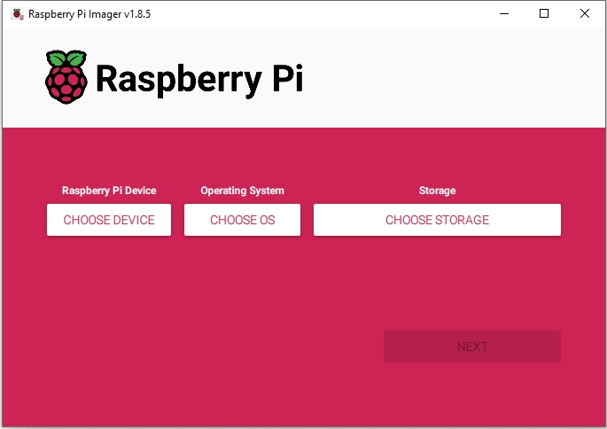

Note
Hello, welcome to the SunFounder Raspberry Pi & Arduino & ESP32 Enthusiasts Community on Facebook! Dive deeper into Raspberry Pi, Arduino, and ESP32 with fellow enthusiasts.
Why Join?
Expert Support: Solve post-sale issues and technical challenges with help from our community and team.
Learn & Share: Exchange tips and tutorials to enhance your skills.
Exclusive Previews: Get early access to new product announcements and sneak peeks.
Special Discounts: Enjoy exclusive discounts on our newest products.
Festive Promotions and Giveaways: Take part in giveaways and holiday promotions.
üëâ Ready to explore and create with us? Click [here] and join today!
Installing the OS
Required Components
Raspberry Pi
A Personal Computer
A Micro SD card
Installation Steps
Visit the Raspberry Pi software download page at Raspberry Pi Imager. Choose the Imager version compatible with your operating system. Download and open the file to initiate installation.

A security prompt may appear during installation, depending on your operating system. For example, Windows might display a warning message. In such cases, select More info and then Run anyway. Follow the on-screen guidance to complete the installation of the Raspberry Pi Imager.

Insert your SD card into your computer or laptop’s SD card slot.
Launch the Raspberry Pi Imager application by clicking its icon or typing
rpi-imagerin your terminal.Click CHOOSE DEVICE and select your specific Raspberry Pi model from the list.

Then click on Choose OS and select an operating system for installation.

Click Choose Storage and select the appropriate storage device for the installation.
Note
Ensure you select the correct storage device. To avoid confusion, disconnect any additional storage devices if multiple ones are connected.
Click NEXT and then EDIT SETTINGS to tailor your OS settings. If you have a monitor for your Raspberry Pi, you can skip the next steps and click ‘Yes’ to begin the installation. Adjust other settings later on the monitor.

Define a hostname for your Raspberry Pi.
Note
The hostname is your Raspberry Pi’s network identifier. You can access your Pi using
<hostname>.localor<hostname>.lan.
Create a Username and Password for the Raspberry Pi’s administrator account.
Note
Establishing a unique username and password is vital for securing your Raspberry Pi, which lacks a default password.

Configure the wireless LAN by providing your network’s SSID and Password.
Note
Set the
Wireless LAN countryto the two-letter ISO/IEC alpha2 code corresponding to your location.
Click SERVICES and activate SSH for secure, password-based remote access. Remember to save your settings.

Confirm your selected settings by clicking Yes.

If the SD card contains existing data, ensure you back it up to prevent data loss. Proceed by clicking Yes if no backup is needed.
The OS installation process will commence on the SD card. A confirmation dialog will appear upon completion.